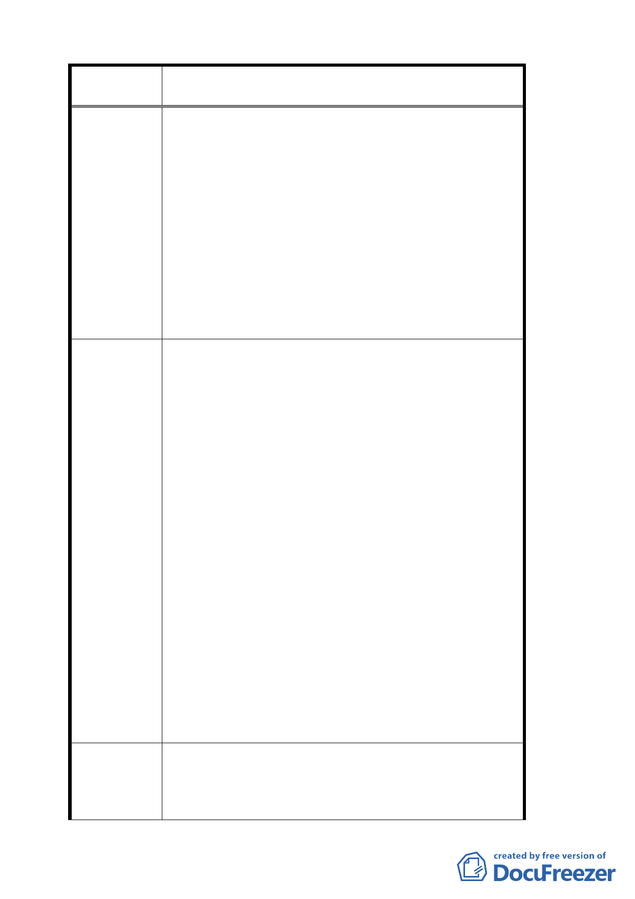

案 名 變更臺北市文山區指南里、老泉里部分保護區為休閒
產業特定專用區都市計畫案
告知）。
（二）申請建築基地面積為五百坪，土地太大，錢太
多，無法達成，五百坪約要一千五百萬元。
（三）建築面積二筆以上者須緊鄰再一起（非常困
難），現在要蓋一棟照市府規定的房子大約要貳
千五百萬至參千萬元左右。
（四）變更案通過後實施，就要每年繳稅，一間五十
坪的農舍且要負擔五百坪的地價稅，無法申請的
土地也要繳稅，因為這筆土地不在六米的道路
邊，農民收入低哪有錢繳稅，只好賣土地。
（五）二年內要提出申請條件如前所述（太多銭無法
達成）（前述的條件是有錢人的遊戲規則）。
（一）請改為三百坪或兩百五十坪為一單位面積。
（二）建蔽率調整為 15％，15％還是非常低度開發。
（三）希望二筆以上土地只要是在休閒特定區的範圍
內即可（整區的建蔽率是不變的）。
（四）沒有變更用途前免繳地價稅（視為農地）。
（五）請認真思考農民收入很少繳稅能力來訂定建蔽
率只有 10％或是 15％的土地稅率。
（六）讓舊有的商家繼續經營，讓市場機制來自然淘
汰、因為大財團進駐新的經營概念、新的設備、
美麗的造景、服務品質好自然淘汰舊有商家，不
建議辦法
必市府介入增加民怨 。
（七）舊有商家只要符合政府的消防衛生公共安全的
規定，配合休閒區的景觀店面，加以整修美化就
讓我們舊有商家繼續經營。
（八）一個休閒觀光區必須是多元化（陶土、藝廊、
花卉、餐飲、品茗）各式各樣大小不一，因為遊
客的消費能力不同，更何況農民的經濟能力不
同，如此嚴苛的規定（建築規範）不是一般農民
有能力達成。政府更應該照顧低收入者，讓我們
這些農民可以生存下去（就如九份多元化的經營
是個成功的例子）。
1.休閒產業特定專用區內既有合法建築之申請基地面
專 案小組 審 積修正為 1000 平方公尺
查 結 論 2.有關稅率適用問題，移請建設局及稅務機關酌處。
3.有關原有不符本計畫土地使用分區管制之建築，修
九